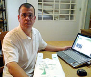
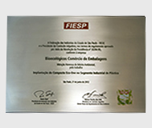
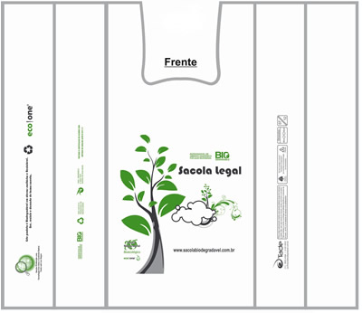

| DESTAQUES |
|

|
Sacola Biodegradável é o 1º produto com a tecnologia Eco-One
Em entrevista ao Jornal Meio Ambiente, Flávio Rodrigues, diretor da Bioecológico
e representante da Tiv Plásticos Eco-One, fala a respeito das qualidades dos
seus produtos
|

|
Menção Honrosa” recebida pela FIESP, de Mérito
Ambiental
Pelo projeto “Implantação do Composto Eco-One no Segmento industrial de
Plásticos”.
|
|
|
Considerando que o composto Eco-One é orgânico,
podemos destacar alguns de seus benefícios se comparados a outras tecnologias: |
| I-
O composto Eco-One é orgânico e não contém amido
em sua base |
| II-
Não contém metais ou componentes semelhantes em
sua composição. |
| III-
Os materiais produzidos com Eco-One, podem ter
contato com alimentos, pois o Eco-One tem certificação ANVISA . |
| IV-
Produtos que usam Eco-One em sua formulação são
totalmente recicláveis e não contaminam o ciclo dos 3Rs. |
| V-
Os materiais são biodegradáveis em ambientes
reais de descarte “anaeróbicos”, ou seja, em aterros sanitários onde a maioria
das tecnologias não funcionam. |
| VI-
Materiais que usam a tecnologia Eco-One atendem
a ensaios de biodegradação anaeróbicos ASTM D5511 e ISO 15985:2004. |
| VII-
Materiais que usam Eco-One passam a ser fonte de
energia em aterros sanitários, pois possibilitam a captura do Biogás. |
| VIII-
O composto Eco-One pode ser mesclado na maioria
dos plásticos inclusive isopores |
| IX-
Não exige investimento, nem qualquer alteração
na linha de produção, pois sua composição não altera qualquer característica
físico/química da resina à qual vai ser mesclada. |
| X-
Melhor custo benefício para o setor plástico com
comprovação de biodegradação. |
|
|  |

O Brasil produz cerca de 240 mil t de lixo por dia – número inferior ao dos EUA
(607 t/dia), mas bem superior ao de países como a Alemanha (85 t/dia) e a Suécia
(10,4 t/dia). Desse total, a maior parte vai parar nos lixões a céu aberto;
apenas uma pequena porcentagem é levada para locais apropriados. Uma cidade como
São Paulo gasta, por dia, 1 milhão de reais com a questão do lixo.
São poucas as
prefeituras do país que possuem equipes e políticas públicas específicas para o
lixo. Quando ele não é tratado, constitui-se num sério problema sanitário, pois
expõe as pessoas a várias doenças (diarréia, amebíase, parasitose) e contamina o
solo, as águas e os lençóis freáticos. Entre as soluções para a questão estão a
criação de aterros sanitários em locais adequados, a adoção de programas de
coleta seletiva e reciclagem, a realização de campanhas de conscientização da
sociedade e uma maior atuação dos poderes públicos. O lixo pode ser classificado
de acordo com sua natureza física, composição química, origem, riscos potenciais
ao meio ambiente, entre outros fatores. A maior parte do lixo
domiciliar no Brasil é composta de matéria orgânica; em seguida vem o papel. O
tratamento adequado do lixo envolve tanto vantagens ambientais (preservação,
saúde e qualidade de vida) como econômicas. Leia mais |